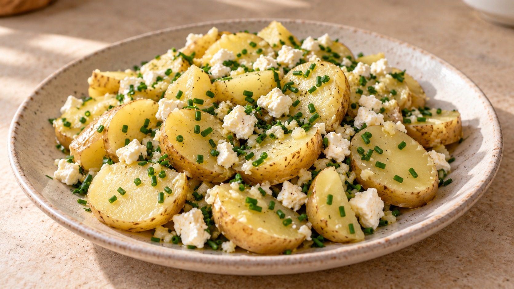

Patatas al vapor sabrosas

Más de Picoteo y guarnicionesPDF para imprimir
Ingredientes
- 400 g de patatas lavadas o patacas novas de temporada
- 1 diente de ajo
- 1 lima
- 1 cucharadita de aceite de oliva (5 ml)
- 1 cucharada de agua (15 ml)
- 50 g de queso feta
- 1 hoja pequeña de laurel
- 1 cucharada de cebollino
- Sal y pimienta
Preparación
Claves
El corte uniforme permite que las patatas se hagan a la vez. Empieza con media lima y ajusta al final; no hace falta gastar todo el zumo. La cucharada de agua mantiene un poco de humedad al reducir el cítrico. El tiempo es orientativo: comprueba el centro y prolonga en tandas cortas. Respeta las indicaciones y la capacidad de tu estuche.
Opciones
Otras hierbas para el vapor: En lugar del laurel, usa una ramita pequeña de tomillo o una pizca si es seco. También puedes elegir un trocito de ramita de romero; pon poco porque domina fácilmente. Añádelos antes de cocinar y retira los tallos al terminar.
Otras hierbas para el final: Sustituye el cebollino por una cucharada de perejil picado, 1–2 cucharaditas de eneldo picado, 2–3 hojas de hierbabuena picadas o una pizca de orégano seco (¼ de cucharadita). Elige una sola alternativa y añádela al servir. También puedes prescindir de la hierba final si te basta con el aroma del laurel.
Para cenar: Acompaña las patatas con una lata de sardinillas en aceite. Aprovecha una cucharadita del aceite de la conserva para el aliño final, en lugar de añadir aceite de oliva aparte. Con las sardinillas queda especialmente bien el eneldo en lugar del cebollino.
Fuente
Adaptada de un folleto de recetas para estuche de vapor aportado por el usuario.